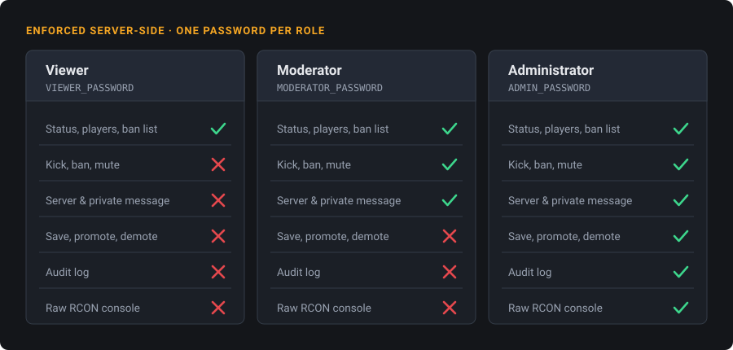
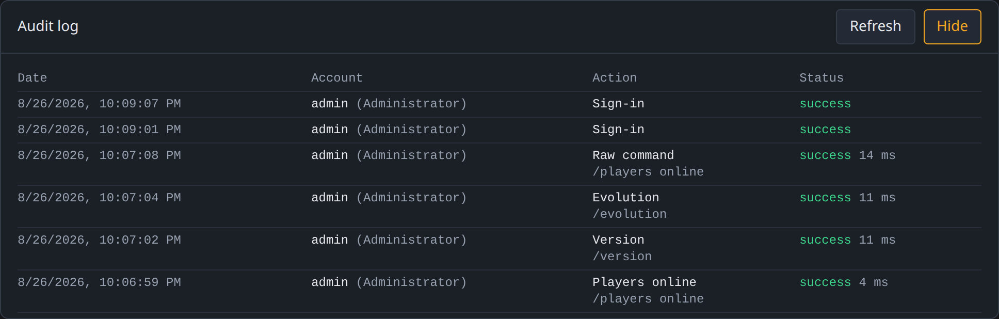

Factorio Admin RCON
Not a server manager: a hardened RCON admin console. Give moderators the server actions they need without handing them full RCON.
Signing in, quick actions, a manual command, the Lua guard, and the audit log — 48 seconds.
Why this exists#
RCON is an all-or-nothing door. One password, no rate limiting, no trace, and complete control of the server for whoever gets through it. That is fine when you are the only administrator. It stops being fine the moment you want someone else to be able to kick a griefer while you are asleep.
The usual answer is to hand out the RCON password and hope. This panel is the other answer: the moderator gets a Kick button, and nothing else.

Permissions are filtered and re-checked server-side — the interface hiding a button is not what stops the request.
What it does#
- Three roles
Viewer, moderator, administrator. The catalogue is filtered by role, and execution re-checks the permission.
- Bounded actions
The server builds the command from validated fields. A value cannot break out of the Lua string it lands in.
- Audit log
Every action and every refusal, in SQLite, with the command actually sent.
- RCON console
A full command line with history — restricted to the administrator role.
- Metrics
CPU, memory, players and UPS as time series, without mounting the Docker socket into the panel.
- Docker, amd64 and arm64
A distroless variant, an SBOM and build provenance on every release.
Where it sits#
What that buys you, concretely: signing out really revokes the cookie, a compromised moderator password cannot reach the raw console, an oversized payload is refused before it is parsed, and the Docker socket is never mounted into the panel. The security model spells out the assumptions — including the ones that are not covered.

The audit log records refusals too — a moderator hitting a permission wall leaves a trace, which is usually the entry you want.
What it does not do#
| Need | This panel | Where to look instead |
|---|---|---|
| Kick, ban, mute, message players from a browser | Yes | — |
| Delegate moderation without handing out RCON | Yes | — |
| Know who ran what, and what was refused | Yes | — |
| Run your own Lua one-liners as bounded buttons | Yes | Custom commands |
| Install, enable or update mods | No | factoriotools/factorio |
| Upload, download or roll back saves | No | The ./data volume |
| Start, stop or update the server binary | No | Your compose file |
| Drive the server from scripts | No | factorio-rcon-api |
Factorio Server Manager drives the binary and covers mods and saves, but it has had no release since March 2021 and has never seen Factorio 2.0. It solves a different problem; where the two overlap, this panel is the narrower, harder-edged tool.
Quick start#
Nothing to clone. One directory, the
ready-made docker-compose.yml
pasted as it stands, and a .env you generate:
cat > .env <<EOF
ADMIN_PASSWORD=$(openssl rand -base64 18)
SESSION_SECRET=$(openssl rand -hex 32)
EOF
docker compose up -d
cat .env # the password to log in with
# → http://127.0.0.1:3010127.0.0.1 only. That is deliberate: it
grants full RCON access. To reach it from elsewhere, put an HTTPS reverse
proxy in front — there is a copy-paste recipe for Caddy, Nginx, Traefik
and Tailscale in the deployment guide.
Questions people actually ask#
- Does it replace Factorio Server Manager?
- No. That one drives the server binary; this one talks RCON to a server that is already running.
- Does it start my server, or manage mods and saves?
- No. It holds no Docker socket and never touches the server process.
- Do I have to expose RCON to the internet?
- No, and you should not. The panel reaches RCON over the compose network; the quickstart publishes no RCON port at all.
- Does it run on ARM64?
- Yes. Every release publishes
linux/amd64andlinux/arm64under the same tag. - How do I set up five moderators?
- They share
MODERATOR_PASSWORD. There is one password per role, not individual accounts — a deliberate fit for a small self-hosted server. - Can I add my own commands?
- Yes, in a JSON catalogue you provide. A custom command is bounded: your moderator gets the button without getting arbitrary Lua.
MIT licensed, self-hosted, no telemetry.